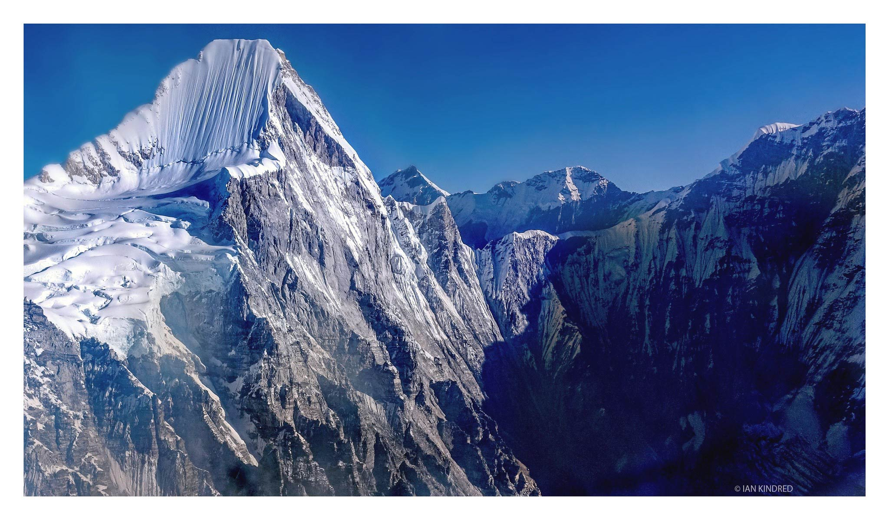

Yarsagumba, Yarshagumba or Yarchagumba is a rare and unique herb that grows in the meadows above 3,500 meters (11,483 feet) in the Himalayan region of Nepal. There are various types of famous medicinal plants found in Nepal but the popularity of yarsagumba is simply overwhelming. For the last couple of years, the trade of yarsagumba is increasing and it has been regarded as an expensive life saving tonic.
Headache, toothache or any other disease - yarsagumba is the remedy. And not only that, it is also believed to be a cure for sexual impotency – a Himalayan Herbal Viagra.Every year during May and June, thousands of villagers from remote areas risking their own lives head for high mountains to collect yarsagumba. It is estimated that one villager can earn up to Rs. 2,500 approximately to $35 a day by collecting yarsagumba which is beyond the monthly salary of many Nepalese households. Dolpa – a remote district in western Nepal with high steep valleys and dry climate is one of the foremost areas for collecting yarsagumba. Almost 50% of the annual supply of yarsagumba comes from Dolpa alone. Here, not only the adults but school goers also take unofficial holidays in search of the gold rush.

Yarchagumba in Mountain
Collection of yarsagumba was illegal until 2001 but following its popularity and the lobbying from various organizations, the Government lifted the ban but imposed a royalty rate of Rs. 20,000 (US$ 280) per kilogram (2.2lbs). One kilo of yarsagumba that costs about Rs. 315 (US$ 5/6) in 1992 increased to Rs. 105,000 (US$ 1,435) by the year 2002 and the price has been shooting up so as the international interest on the mysterious half-caterpillar-half-mushroom known as yarsagumba.yarchagumba, cordyceps sinensis or Himalayan Viagar picked from Dolpa, Nepal. Yarchagumba increase libido, stamina and immunity. eating a single piece of Cordyceps measurable effct for days.We would you like to provide information about the Cordyceps sinesis fungus on this page to help others learn more about this plant
Yarchagumba
In
Yarsagumba is a unique caterpillar-fungus fusion that occurs when parasitic mushroom spores (Ophiocordyceps sinensis) infect and mummify a ghost moth larva living in the soil. A spindly fungus later sprouts from the dead caterpillar host’s head. Two to six centimeters long, the fungus shoots above the soil, acting as a tiny, finger-shaped flag for harvesters to find. This peculiar hybrid is the world’s most expensive biological resource. Yarsagumba thrives in the picturesque peaks of the Himalayas, at altitudes of between 3000 and 5000 meters, in Nepal, India and Bhutan, and also on the “roof of the world” — the Tibetan Plateau. In Tibet, it’s called “Yartsa gunbu,” which translates to “summer grass winter worm.”